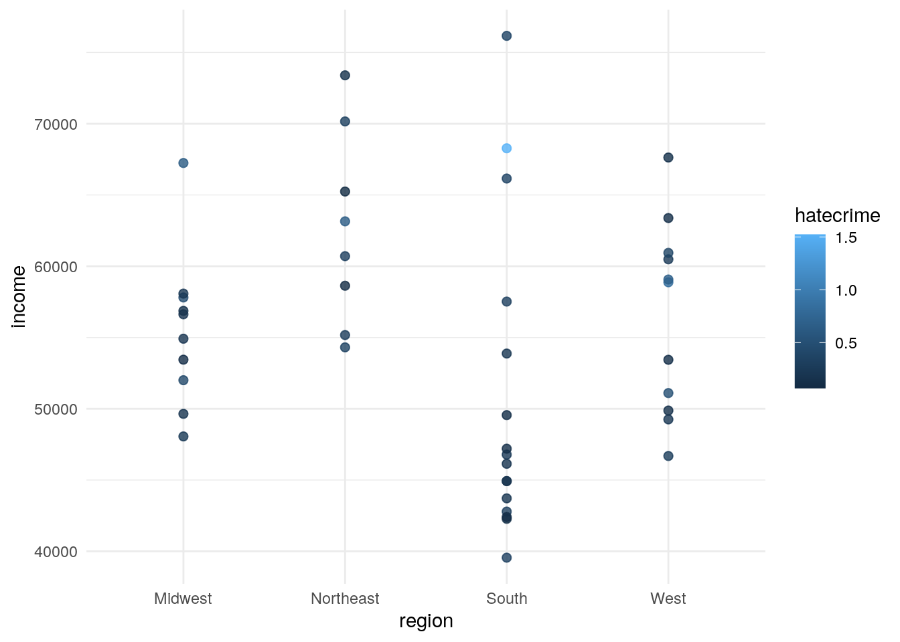
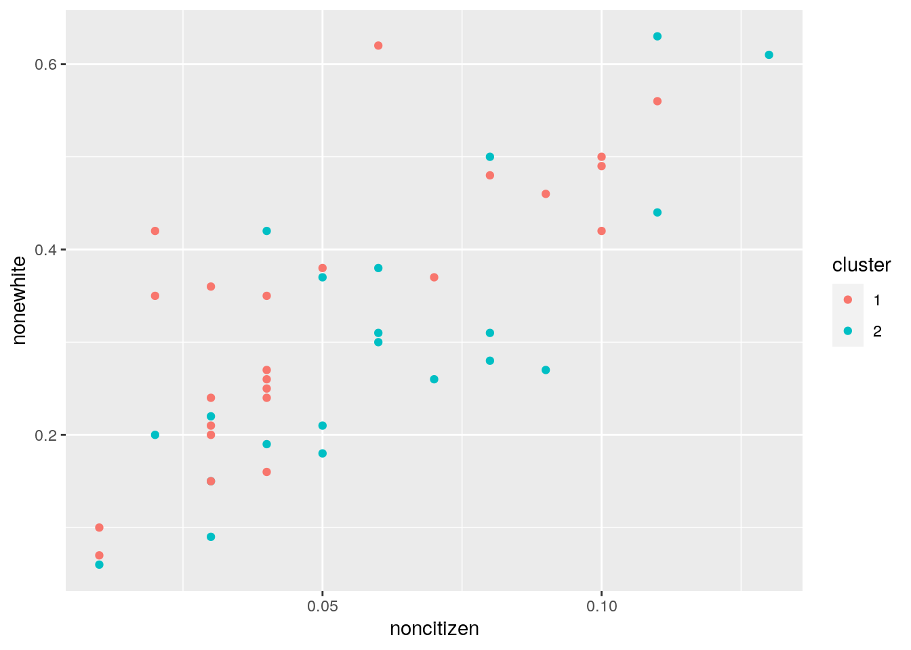
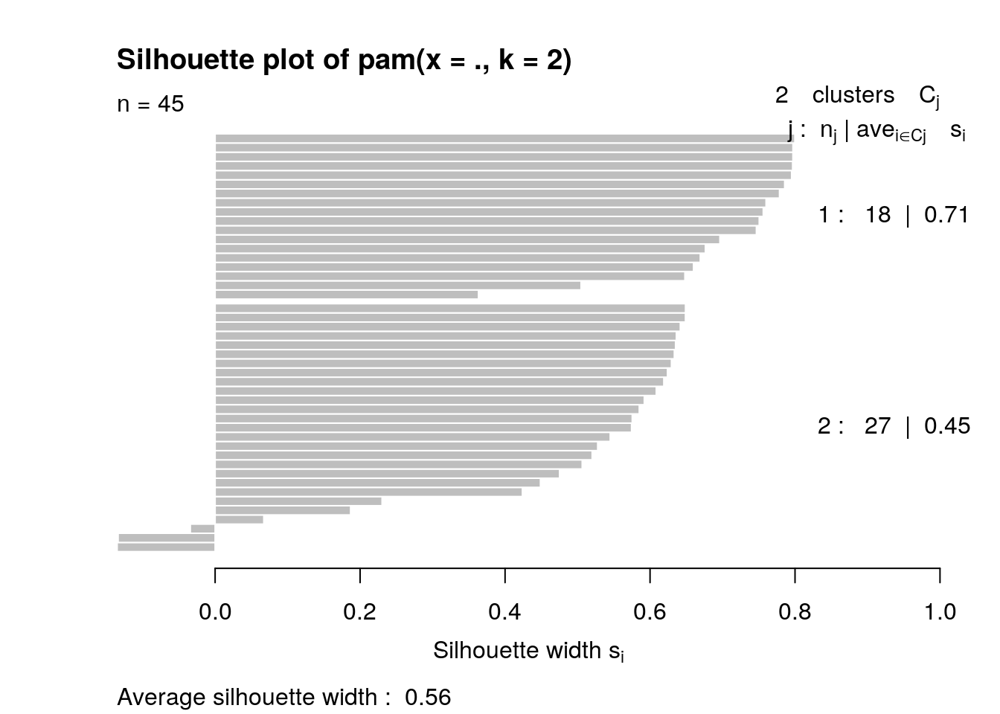
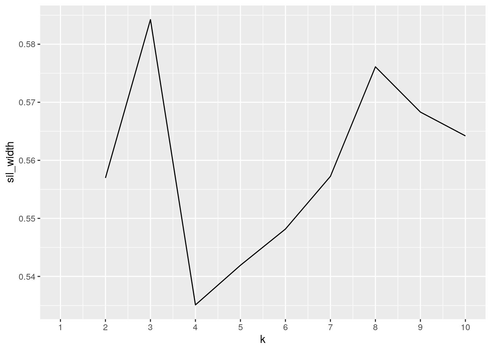
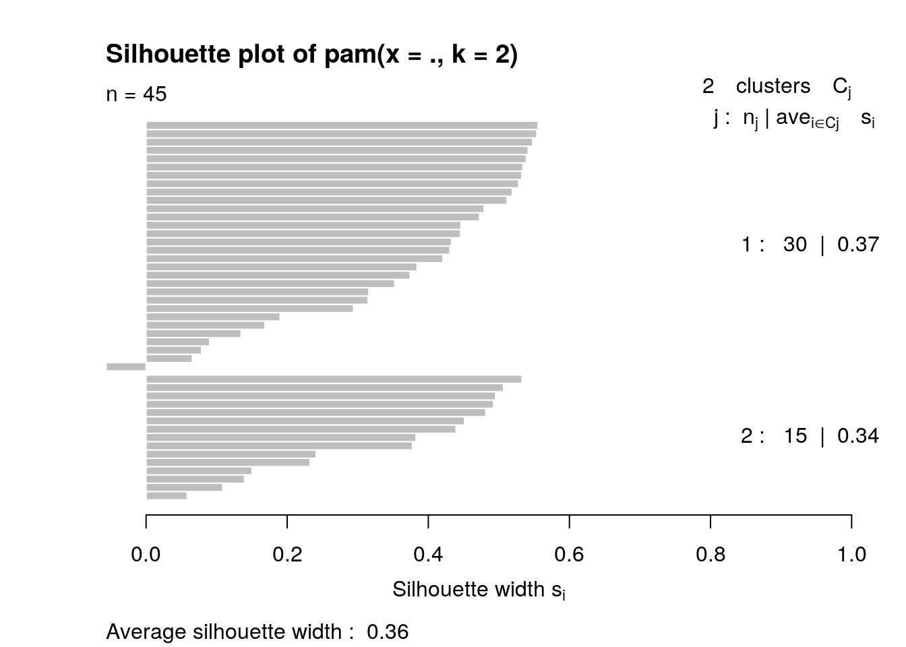
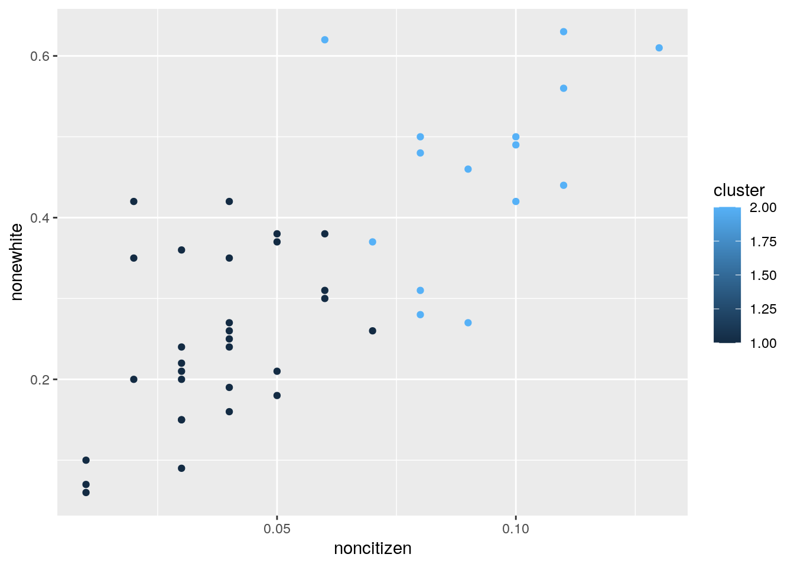

knitr::opts_chunk$set(echo = TRUE)I choose the two data sets (hate_crimes) and (state_info) from the database fivethirtyeight. Both of my datasets have the states name in common and that is how I joined them. I moved to the U.S. about four years ago and I always wanted to learn more about it. The data set state_info has the variables: states name, abbreviations of the states, divion and region of each state. The data set hate_crimes has the variables: states name, abbreviations of the states, the median income of households, how much people do not like crime and the amount of shares of different groups of people.
library(dplyr)##
## Attaching package: 'dplyr'## The following objects are masked from 'package:stats':
##
## filter, lag## The following objects are masked from 'package:base':
##
## intersect, setdiff, setequal, unionlibrary(ggplot2)
library(ggridges)
select<-dplyr::select
library(fivethirtyeight)## Some larger datasets need to be installed separately, like senators and
## house_district_forecast. To install these, we recommend you install the
## fivethirtyeightdata package by running:
## install.packages('fivethirtyeightdata', repos =
## 'https://fivethirtyeightdata.github.io/drat/', type = 'source')library(tidyverse)## ── Attaching packages ─────────────────────────────────────── tidyverse 1.3.0 ──## ✓ tibble 3.0.4 ✓ purrr 0.3.4
## ✓ tidyr 1.1.2 ✓ stringr 1.4.0
## ✓ readr 1.4.0 ✓ forcats 0.5.0## ── Conflicts ────────────────────────────────────────── tidyverse_conflicts() ──
## x dplyr::filter() masks stats::filter()
## x dplyr::lag() masks stats::lag()write.csv(hate_crimes, "hc.csv")
getwd()## [1] "/stor/home/sk49523/website1/content/project"hc <- read.csv("hc.csv")
write_csv(state_info, "si.csv")
getwd()## [1] "/stor/home/sk49523/website1/content/project"si <- read.csv("si.csv")
fulldata <- full_join(si, hc ,by="state")
fulldata <- fulldata %>% na.omit()
new <- fulldata %>% select(state, "abbrev"= state_abbrev.x, -state_abbrev.y, "income"=median_house_inc, -share_unemp_seas, -share_pop_metro, -share_pop_hs, "noncitizen"=share_non_citizen,"whitep"=share_white_poverty, -gini_index, "nonewhite"=share_non_white, -share_vote_trump, "hatecrime"=hate_crimes_per_100k_splc, "av.hatecrime"=avg_hatecrimes_per_100k_fbi, division,region)I used full_join for joining my two data sets to have all of my variables and I used the common variable state for joining them. I also made a new data called “new” from fulldata in which I dropped the variables share_vote_trump, gini_index, share_pop_metro, share_pop_hs, share_unemp_seas. I do not think this should be a problem because I had too many variables and wanted to decrease them and I have the fulldata intact in case I needed to use the whole data in any step.
library(tidyverse)
library(dplyr)
#untidy <- new %>% pivot_wider(names_from="region", values_from="whitep")
#tidy <- untidy%>% pivot_longer(c("South", "West", "Northeast", "Midwest"), names_to="regions",values_to="whitep") %>% na.omit()My data were already tidy therefore I tried to untidy and tidy my data again. I used pivot_wider function for un-tiding my data and pivot_wider for tiding my data again.
##summary satistics
new %>% arrange(desc(income)) %>% filter(region=="South") %>% select(1:8) %>% mutate(sum= (nonewhite)+ (whitep))## state abbrev income noncitizen whitep nonewhite hatecrime
## 1 Maryland MD 76165 0.08 0.06 0.50 0.37043897
## 2 District of Columbia DC 68277 0.11 0.04 0.63 1.52230172
## 3 Virginia VA 66155 0.06 0.07 0.38 0.36324890
## 4 Delaware DE 57522 0.05 0.08 0.37 0.32275417
## 5 Texas TX 53875 0.11 0.08 0.56 0.21358394
## 6 Georgia GA 49555 0.08 0.09 0.48 0.12042027
## 7 Oklahoma OK 47199 0.04 0.10 0.35 0.13362910
## 8 North Carolina NC 46784 0.05 0.10 0.38 0.24400659
## 9 Florida FL 46140 0.09 0.11 0.46 0.18752122
## 10 South Carolina SC 44929 0.03 0.09 0.36 0.20989442
## 11 Arkansas AR 44922 0.04 0.12 0.26 0.06906077
## 12 Tennessee TN 43716 0.04 0.13 0.27 0.19993848
## 13 Kentucky KY 42786 0.03 0.17 0.15 0.32439697
## 14 Louisiana LA 42406 0.02 0.12 0.42 0.10973335
## 15 Alabama AL 42278 0.02 0.12 0.35 0.12583893
## 16 West Virginia WV 39552 0.01 0.14 0.07 0.32867707
## av.hatecrime sum
## 1 1.3248395 0.56
## 2 10.9534797 0.67
## 3 1.7247546 0.45
## 4 1.4699796 0.45
## 5 0.7527683 0.64
## 6 0.4120118 0.57
## 7 1.0816721 0.45
## 8 1.2626798 0.48
## 9 0.6980703 0.57
## 10 1.9370828 0.45
## 11 0.8692089 0.38
## 12 3.1360512 0.40
## 13 4.2078896 0.32
## 14 1.3411696 0.54
## 15 1.8064105 0.47
## 16 2.0370536 0.21new %>% summarize_all(n_distinct)## state abbrev income noncitizen whitep nonewhite hatecrime av.hatecrime
## 1 45 45 45 12 12 32 45 45
## division region
## 1 9 4new %>% group_by(state, region) %>% summarize_all(n_distinct)## # A tibble: 45 x 10
## # Groups: state [45]
## state region abbrev income noncitizen whitep nonewhite hatecrime av.hatecrime
## <fct> <fct> <int> <int> <int> <int> <int> <int> <int>
## 1 Alab… South 1 1 1 1 1 1 1
## 2 Alas… West 1 1 1 1 1 1 1
## 3 Ariz… West 1 1 1 1 1 1 1
## 4 Arka… South 1 1 1 1 1 1 1
## 5 Cali… West 1 1 1 1 1 1 1
## 6 Colo… West 1 1 1 1 1 1 1
## 7 Conn… North… 1 1 1 1 1 1 1
## 8 Dela… South 1 1 1 1 1 1 1
## 9 Dist… South 1 1 1 1 1 1 1
## 10 Flor… South 1 1 1 1 1 1 1
## # … with 35 more rows, and 1 more variable: division <int>new %>% summarize_if(is.numeric, list(min=min, max=max, sd=sd, median=median, mean=mean) , na.rm=T)## income_min noncitizen_min whitep_min nonewhite_min hatecrime_min
## 1 39552 0.01 0.04 0.06 0.06906077
## av.hatecrime_min income_max noncitizen_max whitep_max nonewhite_max
## 1 0.4120118 76165 0.13 0.17 0.63
## hatecrime_max av.hatecrime_max income_sd noncitizen_sd whitep_sd
## 1 1.522302 10.95348 8979.492 0.03123227 0.02466339
## nonewhite_sd hatecrime_sd av.hatecrime_sd income_median noncitizen_median
## 1 0.1486936 0.2515628 1.718622 54916 0.05
## whitep_median nonewhite_median hatecrime_median av.hatecrime_median
## 1 0.09 0.3 0.2261971 1.937083
## income_mean noncitizen_mean whitep_mean nonewhite_mean hatecrime_mean
## 1 55299.49 0.05533333 0.09088889 0.3175556 0.30243
## av.hatecrime_mean
## 1 2.373812new %>% group_by(state, region) ## # A tibble: 45 x 10
## # Groups: state, region [45]
## state abbrev income noncitizen whitep nonewhite hatecrime av.hatecrime
## <fct> <fct> <int> <dbl> <dbl> <dbl> <dbl> <dbl>
## 1 Alab… AL 42278 0.02 0.12 0.35 0.126 1.81
## 2 Alas… AK 67629 0.04 0.06 0.42 0.144 1.66
## 3 Ariz… AZ 49254 0.1 0.09 0.49 0.225 3.41
## 4 Arka… AR 44922 0.04 0.12 0.26 0.0691 0.869
## 5 Cali… CA 60487 0.13 0.09 0.61 0.256 2.40
## 6 Colo… CO 60940 0.06 0.07 0.31 0.391 2.80
## 7 Conn… CT 70161 0.06 0.06 0.3 0.335 3.77
## 8 Dela… DE 57522 0.05 0.08 0.37 0.323 1.47
## 9 Flor… FL 46140 0.09 0.11 0.46 0.188 0.698
## 10 Geor… GA 49555 0.08 0.09 0.48 0.120 0.412
## # … with 35 more rows, and 2 more variables: division <fct>, region <fct>new%>% summarize(means= mean(income))## means
## 1 55299.49for the summary statistics first I used arrange and the function descending to arrange my data in a way that I have the highest income on the top of my table and then the lower ones.I used filter to only select the data that are in the South region and then the function select to remove the unnecessary columns. with mutate I created a new column called sum which has the addition of shares of the people who are not white and people who are white and in poverty. I specificity used suumarize_if because I only wanted to calculate the summary statistics of the numeric variables not everything. From the data we can see that the division South Atlantic in the region south has the highest income and among thoese Maryland with 76165 has the highest income of all. The min income of house holds is West Virginia with the income 39552. Something that was interesting from my data was that even though U.S. has 51 states my distinct number of states in my data was 45.
#new %>% select_if(is.numeric) %>% cor %>% as.data.frame %>% rownames_to_column %>% pivot_longer(-1) %>%ggplot(aes(rowname,name,fill=value))+geom_tile()geom_text(aes(label=round(value,2)))+ xlab("")+ylab("")+coord_fixed()+scale_fill_gradient2(low="red",mid="white",high="blue")+ theme_minimal()+ ggtitle("graph1") In graph1 we can see the correlation head map of the numeric variables in the data set new. I choose the data set new instead of fulldata because the names were shorter and it has less data which resulted in a better graph. In this graph the strongest correlation is 1 between each variable and itself. The next strongest correlation was -0.81 between income and white poverty meaning that the white poverty group had the lowest income.The smallest correlation is 0.04 between income and nonwhite meaning that according to this data there is no a strong relationship between income and people who are not white.
#graph2
#new %>% ggplot(aes(region,income)) + facet_wrap(~division) + geom_bar(stat="summary") + geom_errorbar(stat="summary", col="red")+ theme_minimal()+ ggtitle("graph2") In graph2 we can wee a visualization of the income in different regions and divisions. From the graph it is clear that New England, region northeast has the highest income. The East South Central in the South has the lowest income. South Atlantic, has the widest error bar and East South Central has the smallest error bar.
ggplot(new, aes(x= income , y= region)) +geom_point(size=2,alpha=.8, aes(color=hatecrime))+coord_flip()+ theme_minimal()
I thought graph3 was interesting because in addition to showing the income of different regions it is also showing how much people hate crime in these areas. According to the graph it can be concluded that most of people have a low income and they do not like crime so maybe a crime is a major issue in that are. We even have the brightest point in the south which represents in the highest number for disliking crime.
library(cluster)
select<-dplyr::select
#way 1
clust_data <- new %>% select(noncitizen, nonewhite , income)
set.seed(348)
kmeans1 <- clust_data %>% kmeans(2)
kmeans1$cluster## 1 2 3 4 5 6 7 8 9 10 12 13 14 15 16 17 18 20 21 22 23 25 26 27 28 29
## 1 2 1 1 2 2 2 2 1 1 1 1 1 2 1 1 1 2 2 1 2 2 1 2 1 2
## 30 31 32 33 35 36 37 38 39 40 42 43 44 45 46 47 48 49 51
## 2 1 1 1 1 1 2 1 2 1 1 1 2 2 2 2 1 2 2#save the cluster solution in your dataset
kmeansclust <- clust_data %>% mutate (cluster= as.factor( kmeans1$cluster ))
kmeansclust %>%ggplot(aes(noncitizen, nonewhite , income, color=cluster))+geom_point() 
pam1<- clust_data %>% pam(2)
pam1## Medoids:
## ID noncitizen nonewhite income
## 33 30 0.05 0.38 46784
## 47 42 0.08 0.31 59068
## Clustering vector:
## 1 2 3 4 5 6 7 8 9 10 12 13 14 15 16 17 18 20 21 22 23 25 26 27 28 29
## 1 2 1 1 2 2 2 2 1 1 2 2 1 2 2 1 1 2 2 1 2 2 1 2 1 2
## 30 31 32 33 35 36 37 38 39 40 42 43 44 45 46 47 48 49 51
## 2 1 2 1 1 1 2 2 2 1 1 2 2 2 2 2 1 2 2
## Objective function:
## build swap
## 5002.200 4076.156
##
## Available components:
## [1] "medoids" "id.med" "clustering" "objective" "isolation"
## [6] "clusinfo" "silinfo" "diss" "call" "data"plot(pam1, which=2)
#way 2
#choosing the best k for three variables
pam_dat<- new %>% select(noncitizen, nonewhite , income)
sil_width<- vector()
for(i in 2:10){
pam_fit <- pam(pam_dat, k = i)
sil_width[i] <- pam_fit$silinfo$avg.width
}
ggplot()+geom_line(aes(x=1:10,y=sil_width))+scale_x_continuous(name="k",breaks=1:10)## Warning: Removed 1 row(s) containing missing values (geom_path).
# k=2 is the best according to the graph becasue of its highest number on graph.
#for three variables
library(tidyverse)
library(plotly)##
## Attaching package: 'plotly'## The following object is masked from 'package:ggplot2':
##
## last_plot## The following object is masked from 'package:stats':
##
## filter## The following object is masked from 'package:graphics':
##
## layoutpam2<- new %>% select(noncitizen, nonewhite , income) %>% scale %>% pam(2)
pam2## Medoids:
## ID noncitizen nonewhite income
## 16 15 -0.4909452 -0.4543271 -0.2066363
## 32 29 1.4301448 0.6889632 -0.1101943
## Clustering vector:
## 1 2 3 4 5 6 7 8 9 10 12 13 14 15 16 17 18 20 21 22 23 25 26 27 28 29
## 1 1 2 1 2 1 1 1 2 2 1 2 1 1 1 1 1 2 2 1 1 1 1 1 2 1
## 30 31 32 33 35 36 37 38 39 40 42 43 44 45 46 47 48 49 51
## 2 2 2 1 1 1 1 1 2 1 1 2 1 1 1 2 1 1 2
## Objective function:
## build swap
## 1.205143 1.205143
##
## Available components:
## [1] "medoids" "id.med" "clustering" "objective" "isolation"
## [6] "clusinfo" "silinfo" "diss" "call" "data"plot(pam2, which=2)
#accorfing to the graph we get 0.36 which means that the structure is weak and could be artificial.
#graph3d for three variables
final <- new %>% select(state,noncitizen, nonewhite , income) %>% mutate(cluster=pam2$clustering)
#summarizing the cluster:
final %>% group_by(cluster) %>% summarize_if(is.numeric, mean, na.rm=T)## # A tibble: 2 x 4
## cluster noncitizen nonewhite income
## <int> <dbl> <dbl> <dbl>
## 1 1 0.0367 0.245 54428.
## 2 2 0.0927 0.463 57042.final %>% plot_ly (x= ~noncitizen, y= ~nonewhite , z= ~income, color= ~cluster, type= "scatter3d", mode="markers", symbols= c('circle','x','o'))## Warning: `arrange_()` is deprecated as of dplyr 0.7.0.
## Please use `arrange()` instead.
## See vignette('programming') for more help
## This warning is displayed once every 8 hours.
## Call `lifecycle::last_warnings()` to see where this warning was generated.#graph2d for three variables
ggplot(final, aes(x=noncitizen, y= nonewhite ,z=income , color= cluster))+geom_point()
For this part of the assignment I choose the three variables of the share of non citizens, share of people who are not white and median income of households. One of the most importent steps was to choose the best k for my three variables and therefore as recommended in the class I plotted a ggplot for K to see which K value has the highest value. According to my graph K=2 has the highest value and that is why I choose the number2. From the next plot I found that the average width is 0.36 which is less than 0.5 and since this number is small we can conclude that the structure is weak and could be artificial.